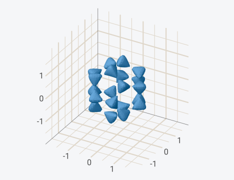
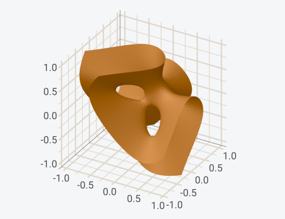
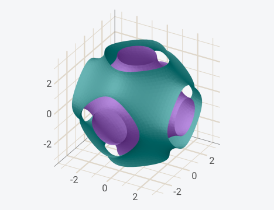
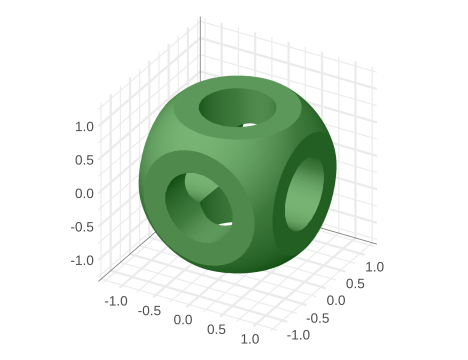
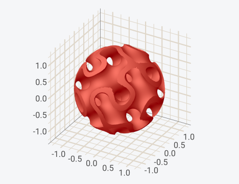
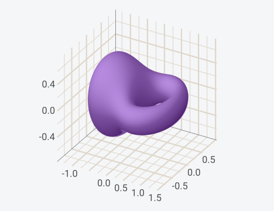
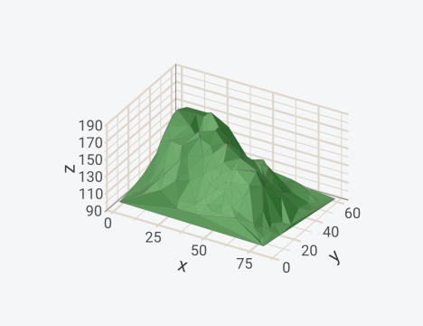
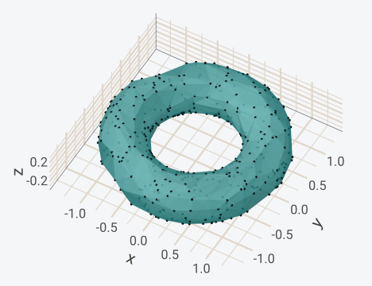
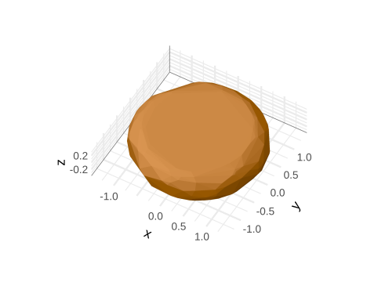
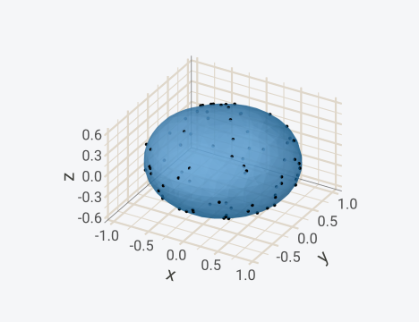

An implicit surface is the set of points where a function of x, y and
z takes one value. geom_isofunction_3d() samples the
function on a grid over the position scales, extracts the level set and
then moves every vertex on a grid edge towards the level along that
edge, so the vertices of a coarse grid still lie close to the function’s
zero set.
Point clouds can also supply a surface through an alpha shape or a fitted implicit function. The reconstruction examples below use small samples; installation is covered in Get started.
cube <- function(k) list(xlim(-k, k), ylim(-k, k), scale_z_continuous(limits = c(-k, k)))Algebraic surfaces
Barth’s sextic has 65 ordinary double points, the most a sextic
surface can have. The polynomial below is the one of PyVista’s
contouring example; points outside the sphere of radius sqrt(3.1) are
set to NA, which masks their grid cells.
phi <- (1 + sqrt(5)) / 2
barth <- function(x, y, z) {
x2 <- x^2; y2 <- y^2; z2 <- z^2
v <- 3 * (phi^2 * x2 - y2) * (phi^2 * y2 - z2) * (phi^2 * z2 - x2) -
(1 + 2 * phi) * (x2 + y2 + z2 - 1)^2
ifelse(x2 + y2 + z2 > 3.1, NA, v)
}
ggplot() +
geom_isofunction_3d(fun = barth, levels = 0, n = 48, fill = "#2E6F9E") +
cube(1.8) + coord_3d()
The Clebsch diagonal cubic contains all 27 lines a smooth cubic surface can carry, each one real.
clebsch <- function(x, y, z) {
81 * (x^3 + y^3 + z^3) - 189 * (x^2 * (y + z) + y^2 * (z + x) + z^2 * (x + y)) +
54 * x * y * z + 126 * (x * y + y * z + z * x) - 9 * (x^2 + y^2 + z^2) -
9 * (x + y + z) + 1
}
ggplot() +
geom_isofunction_3d(fun = clebsch, levels = 0, n = 40, fill = "#9E5E0F") +
cube(1) + coord_3d()
Triply periodic surfaces
The Schwarz P surface is close to the zero set of cos x + cos y + cos z. Two level sets on either side of zero bound a wall around it.
schwarz <- function(x, y, z) cos(x) + cos(y) + cos(z)
ggplot() +
geom_isofunction_3d(aes(fill = after_stat(factor(level))),
fun = schwarz, levels = c(-0.4, 0.4), n = 36) +
scale_fill_manual(values = c("#2A7A7A", "#7A4F9E"), name = "level") +
cube(pi) + coord_3d()
Shapes from signed distance functions
A signed distance function is negative inside a shape, positive
outside and zero on its surface. sdf_sphere(),
sdf_box(), sdf_torus(),
sdf_capsule(), sdf_plane(),
sdf_gyroid() and sdf_metaballs() build them,
and |, &, -,
sdf_blend(), sdf_offset(),
sdf_shell() and sdf_transform() combine them.
The result is still a function of x, y and z, so it goes straight into
geom_isofunction_3d(), which extracts its zero set by
default and takes the normals from its exact gradient.
part <- sdf_box(size = c(2, 2, 2), radius = 0.15) & sdf_sphere(radius = 1.3)
drill <- sdf_capsule(c(-2, 0, 0), c(2, 0, 0), 0.5) |
sdf_capsule(c(0, -2, 0), c(0, 2, 0), 0.5) |
sdf_capsule(c(0, 0, -2), c(0, 0, 2), 0.5)
part - drill
#> <ggplot3d_sdf> distance bound (Lipschitz 1)
#> difference
#> intersection
#> box(centre = (0, 0, 0), size = (2, 2, 2), radius = 0.15)
#> sphere(centre = (0, 0, 0), radius = 1.3)
#> union
#> union
#> capsule(a = (-2, 0, 0), b = (2, 0, 0), radius = 0.5)
#> capsule(a = (0, -2, 0), b = (0, 2, 0), radius = 0.5)
#> capsule(a = (0, 0, -2), b = (0, 0, 2), radius = 0.5)
ggplot() +
geom_isofunction_3d(fun = part - drill, n = 40, fill = "#3F7A3D") +
cube(1.2) + coord_3d()
sdf_blend() replaces the sharp minimum of a union by a
smooth one that adds at most k where the shapes meet. A
gyroid sheet cut by a sphere shows a second use of the same algebra:
sdf_shell() turns the gyroid’s zero set into a wall of
given thickness.
blob <- sdf_blend(sdf_sphere(c(-0.6, 0, 0), 0.6),
sdf_torus(c(0.5, 0, 0), major = 0.6, minor = 0.2), k = 0.15)
sheet <- sdf_shell(sdf_gyroid(period = 1.2), 0.08) & sdf_sphere(radius = 1.2)
ggplot() +
geom_isofunction_3d(fun = sheet, n = 56, fill = "#B5342B") +
cube(1.25) + coord_3d()
Because the expression tree of a distance function can also be
evaluated on whole boxes in interval arithmetic,
adaptive = TRUE refines an octree only near the surface and
near its sharp edges.
ggplot() +
geom_isofunction_3d(fun = blob, adaptive = TRUE, depth = c(3, 6),
fill = "#7A4F9E") +
xlim(-1.3, 1.4) + ylim(-0.9, 0.9) + scale_z_continuous(limits = c(-0.7, 0.7)) +
coord_3d()
Scattered height measurements
A height surface has one height at each horizontal position. Sample 200 locations from the built-in volcano matrix and join their x/y positions with a Delaunay triangulation. The triangles interpolate their three measured heights; their edges are visible here to show the irregular mesh.
terrain <- expand.grid(x = seq_len(nrow(volcano)), y = seq_len(ncol(volcano)))
terrain$z <- as.vector(volcano)
set.seed(12)
samples <- terrain[sample(seq_len(nrow(terrain)), 200), ]
ggplot(samples, aes(x, y, z = z)) +
geom_surface_3d(method = "delaunay", fill = "#3F7A3D",
colour = "grey40", linewidth = 0.15) +
coord_3d(aspect = c(1.4, 1, 0.7))
This surface ends at the convex hull of the sampled horizontal positions. For an object with several surface heights at the same x/y position, use three-dimensional reconstruction.
Alpha shapes
An alpha shape selects local connections between points using a radius threshold. Sample a torus with major radius 1 and tube radius 0.35. This gives a point cloud whose reconstructed surface can retain a central hole.
set.seed(6)
u <- runif(400, 0, 2 * pi)
v <- runif(400, 0, 2 * pi)
torus <- data.frame(x = (1 + 0.35 * cos(v)) * cos(u),
y = (1 + 0.35 * cos(v)) * sin(u), z = 0.35 * sin(v))
shape <- ggplot(torus, aes(x, y, z = z))The radius threshold uses transformed position units. A smaller threshold can leave disconnected pieces, while a sufficiently large one fills the convex hull. The opacity argument controls transparency independently of the reconstruction radius.
shape + geom_alpha_shape_3d(radius = 0.4, fill = "#2A7A7A", alpha = 0.7) +
geom_point_3d(size = 0.4) + coord_3d(aspect = "data", elevation = 50)
shape + geom_alpha_shape_3d(radius = Inf, fill = "#9E5E0F") +
coord_3d(aspect = "data", elevation = 50)
With an automatic threshold, the stat chooses the smallest radius at which the selected tetrahedra touch every point. See geom_alpha_shape_3d() for the boundary triangles and computed variables.
Fitting an implicit function to points
A radial basis function fit estimates a scalar field whose zero set passes through the sample. It also constrains points a small distance to either side of the surface, using supplied or estimated normals. The fit below uses 80 sampled points on an ellipsoid with vertical semi-axis 0.6 and supplies its analytical normal directions.
set.seed(2)
unit <- matrix(rnorm(240), ncol = 3)
unit <- unit / sqrt(rowSums(unit^2))
shell <- data.frame(x = unit[, 1], y = unit[, 2], z = 0.6 * unit[, 3])
shell$nx <- shell$x
shell$ny <- shell$y
shell$nz <- shell$z / 0.6^2The grid resolution controls extraction of the fitted zero set. The smoothing parameter controls the fit itself. A dense linear solve limits this method to 2,000 input points; use a small representative sample.
ggplot(shell, aes(x, y, z = z, nx = nx, ny = ny, nz = nz)) +
stat_implicit_fit_3d(method = "rbf", n = 18,
fill = "#2E6F9E", alpha = 0.65) +
geom_point_3d(size = 0.7) + coord_3d(aspect = "data")
Omit the three normal mappings to estimate normals from neighbouring points. The neighbourhood size and smoothing arguments are described in stat_implicit_fit_3d().